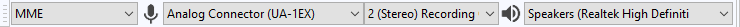

Connecting audio equipment
- See also Tutorial - Connecting Up.
Contents
Connecting a Microphone
If your computer has a microphone input port
Just plug a compatible microphone into the microphone input port on your computer.
What do we mean by compatible? Any microphone with a permanently attached cord that ends in a mini-plug should work. Note that many audio interfaces provide battery voltage for mono electret microphones on the ring of a stereo mini-plug. Check your computer manual to be sure if this feature is provided. If it is, be sure to use a microphone that is designed to accommodate this.
If your computer does not have a microphone input port
Do not plug a microphone into the line input port on your computer. The volume will be way too low (the line input port does not apply the needed amplification to boost the very quiet signal from the microphone). You will not break anything, but you will be very frustrated with the results.
You have 3 options for connection:
- use a microphone to USB adapter
- use a USB microphone
- use a mixer.
For details see Connecting a Microphone.
Connecting an Instrument
Generally speaking you will want to connect these instruments to the line input port on your computer, not the microphone port (which is often mono). Not all computers will have a line input port.
- Some PC laptops may have a hardware or software switch to convert the microphone port to line-level stereo.
- Some PC notebooks/netbooks may have a compliant microphone input port which will tolerate line level inputs and may provide stereo input.
Always try line-level input first, and only use a microphone input if you cannot otherwise get adequate recording volume. You can buy modestly priced, decent quality USB interfaces with line level stereo input if needs be.
For details see Connecting an Instrument.
Connecting a Mixer
To connect a mixer to the line input port on your computer you will need a dual-RCA to mini-plug (1/8 inch) cable. Plug the RCA plugs into the RCA output jacks on the back of the mixer. Plug the stereo mini-plug into the line input port on your computer.
If you do not have a line input port (many Windows laptops do not), you'll need a line level USB audio interface. In that case you will need a cable that connects from the output of the mixer to the input of the USB interface. In the illustration below a dual-RCA cable is connected from the output of the mixer (out of frame) to a USB interface. The USB interface then plugs into the USB port on the laptop.
For details see Connecting a Mixer.
Connecting a USB device
This is a very basic guide to connecting USB devices. More detailed information (and Mac instructions) can be found at Recording with USB turntables or USB cassette decks.
- Connect the USB cable of the turntable, or tapedeck, to the computer, then launch Audacity. If Audacity was already running when you connected the cable, restart Audacity or choose .
- Use the Device Toolbar to set the recording and playback devices and set the channels to "2(stereo) Recording Channels" ('or mono if required):
- 
- In this example, the input is set to be an external USB soundcard (Edirol UA-1EX).
- Sometimes the name includes the phrase "USB Audio CODEC", though Windows usually calls most USB external devices "microphones".
- Some higher-end USB recording interfaces may appear as their explicit manufacturer's name, as in our example here.
| Ignore any instructions in the manufacturer's guide to select "stereo mix" as the input. |
- You will usually need to set the output device to be the named speakers of your computer's built-in computer sound device (as in the above image), as most USB turntables and cassette decks do not have playback facilities and thus you would not hear what is being played.
- From the Transport Menu check "Software Playthrough" to be "on" to hear the turntable or other device through the computer speakers. This setting can be toggled on/off easily using .
For details see Recording with USB turntables or USB cassette decks.